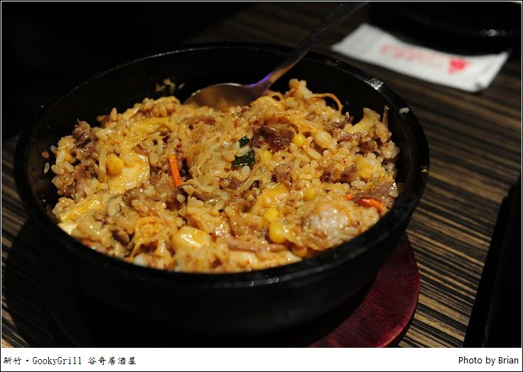
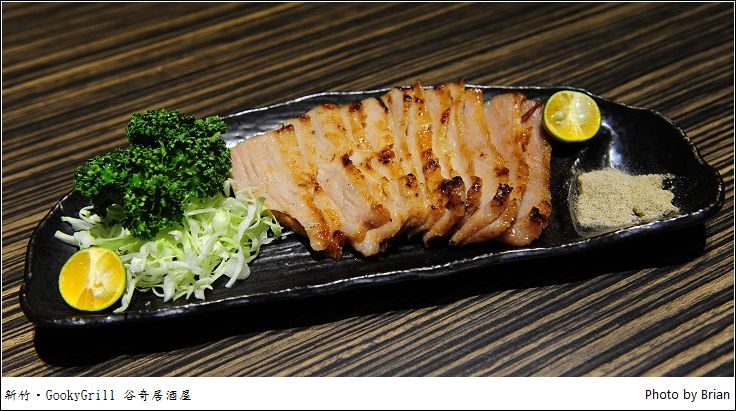

那時候和老闆聊天，他還打算把原本二樓的空間加以修改，再弄出一個可以容納更多人的包廂，原以為他還只是在腦海中構想階段，想不到過了幾個月，老闆竟然真的弄出了一個更大的包廂，而且還更加華麗的感覺，一整個可以和外面的 KTV 比拚!!
基本上一樓的空間和之前來訪時差不多，所以我就抓之前的照片沒有認真在拍照了。不過從樓梯爬上二樓，轉了一個彎後，這包廂就把我們嚇壞了~~ 一整個超寬闊的空間，挑高的樓板，一整排的大沙發配上四周圍有點華麗感的壁紙，牆壁上掛著65吋大電視，說我們來到錢櫃之類的 KTV 也不為過了吧!

這樣的大包廂，光沙發的地方應該就可以坐 20個人左右了，前面的大空間如果再拉出小椅子來，25人也不是問題，而且前面的大空間如果大家歡唱又喝到HIGH 起來時....應該是超棒的舞池了~~XD 包廂位在二樓，一整個就一組客人專屬，完整的包覆起來大小聲也不用擔心會吵到別人，我想部門或是朋友間壓力太大想要宣洩時，這裡實在太棒了~而且，二樓旁邊就兩個冰櫃，酒精或是非酒精飲料就在旁邊，如果你選的是暢飲方案的話...乖乖!想喝什麼就自己動手拿耶，完全不求人的自助喝到爽!(開車不喝酒，喝酒不開車)
真的想喝什麼就自己來
包廂看了半天，也該要開始吃東西了。第一道塔香鳳螺，用砂鍋盛裝的鳳螺炒得相當入味，用牙籤把它們拉出來，雖然螺肉不算大，但是味道都已經進去到裡面，很夠味。
接著這可以當作主食的牛五花拌飯，石鍋拌飯的形式包含著牛五花、泡菜、玉米、菇類等等配料，石鍋鍋底的部分有微微的鍋巴，泡菜在其中也讓整個石鍋拌飯變得很有味道，自己覺得肚子有填入食物後....大家就想開始拿起麥克風歡唱了~
接著這可以當作主食的牛五花拌飯，石鍋拌飯的形式包含著牛五花、泡菜、玉米、菇類等等配料，石鍋鍋底的部分有微微的鍋巴，泡菜在其中也讓整個石鍋拌飯變得很有味道，自己覺得肚子有填入食物後....大家就想開始拿起麥克風歡唱了~
接著的燒醬炒豬五花也是很適合配白飯或是啤酒的餐點，有些人忙著一邊唱著歌有些人忙著吃東西，想喝什麼就自己拿著喝，很舒適自在的環境，山豬肉中帶有肥、瘦肉，讓你可以享受到不同的口感，不過肉要費點嘴力咀嚼~
紅麴塔香蛤蜊一樣一大鍋，很多的蛤蜊炒得夠味，又是一道很棒的下酒菜。(這老闆是想讓大家暢飲到翻嗎?XD)
這川香干鍋蝦把蝦子和辣椒一起處理，蝦殼上都還可以看到許多的辣椒子，不小心吃到就讓我的嘴巴辣到不行的發麻了起來，但是對於愛吃辣的人來說，這一道真的是超棒的~

接著這道菲力牛肉，讓我們還滿驚豔的。牛肉片不會烤得太過老熟，中間還可以看到那鮮嫩的色調，每一片中還可以吃到一點海鹽，很爽口好吃。
到這時候大家已經有點 HIGH 了起來，歌聲也越來越大聲，幸好是自己用的包廂，不然其他人應該會@#$%吧。接著這炭烤章魚足，一個個切成小圓狀的章魚腳，烤的恰到好處，帶著醬汁一起吃，那有點 Q彈又入味的口感，好吃。

最後這道松阪豬，切得很均勻的豬肉片，側邊表面烤的均勻的油光，沾點胡椒粉吃就很棒。
在這邊除了可以吃到好吃的料理之外，如果選擇到的方案是暢飲方案，一旁冰櫃中的飲料真的是毫不客氣地隨你取用，對於能喝的人來說，就變得很划算了，尤其是在還可以擁有包廂式的 KTV 歡唱，能唱的可以一口氣唱 6個小時，全部好友一起聊天、大聲喧鬧，感覺很自在。這麼大的包廂，應該也滿適合一般的部門聚餐，在壓力很大的時候，大家一起來聚餐宣洩一下，只能說好爽阿!!
谷奇經過這一番改裝，除了一樓的原本開放空間及小包廂外，二樓多出這麼一個大包廂來，讓大家不管人多或人少，都有不同大小的包廂可以選擇，一群朋友想要聚聚、一邊開心的暢飲聊天唱歌，真的是不錯的好選擇喔!
引自:http://hrylin.pixnet.net/blog/post/42780200